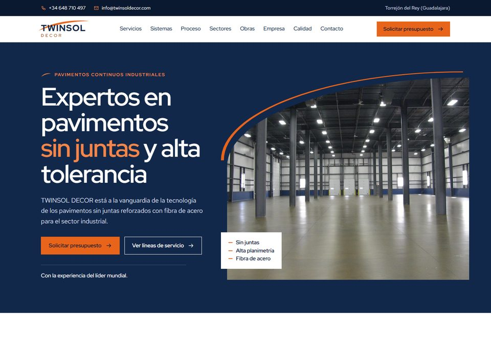

Propuesta 01
Matriz
La más cercana a la web del grupo. Portada en azul marino con la fotografía recortada por el arco naranja del logotipo, tarjetas de servicio con foto y velo marino, cifras y mosaico de sectores. Quien conozca la web de la matriz reconoce la familia al instante; la composición, los textos, las tipografías y el motivo gráfico son propios de Twinsol.
Ver la propuesta